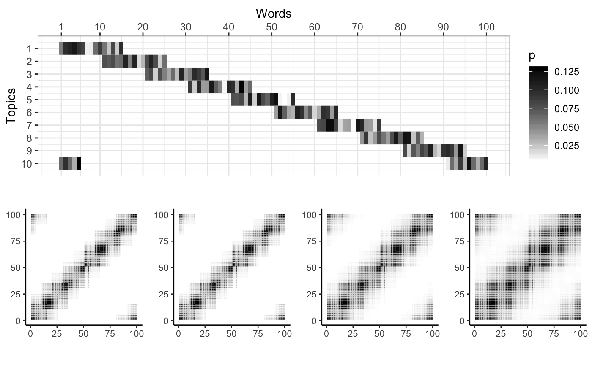

The following generates and plots a topic-word probability matrix, and computes and plots the 1st to 4th order word-word similarity matrices from the artificial language (using the topic-word matrix as the semantic vectors for each word).
library(ggplot2)
library(dplyr)
frequency_matrix <- matrix(
sample(1:100,10*100,replace=TRUE),
byrow=TRUE,
ncol=100,
nrow=10
)
overlap <- matrix(0,ncol=100,nrow=10)
overlap[1, 1:15] <- 1
overlap[2, 11:25] <- 1
overlap[3, 21:35] <- 1
overlap[4, 31:45] <- 1
overlap[5, 41:55] <- 1
overlap[6, 51:65] <- 1
overlap[7, 61:75] <- 1
overlap[8, 71:85] <- 1
overlap[9, 81:95] <- 1
overlap[10, c(1:5,91:100)] <- 1
frequency_matrix <- frequency_matrix*overlap
prob_matrix <- frequency_matrix/rowSums(frequency_matrix)
library(reshape2)
longData <-melt(prob_matrix)
longData<-longData[longData$value!=0,]
longData <- longData %>%
rename(p = value)
A1 <- ggplot(longData, aes(x = Var2, y = Var1)) +
geom_tile(aes(fill=p)) +
scale_fill_gradient(low="white", high="black") +
labs(x="Words", y="Topics") +
theme_bw() + theme(axis.text.x=element_text(size=9, angle=0, vjust=0.3),
axis.text.y=element_text(size=9),
plot.title=element_text(size=11))+
scale_x_continuous(breaks=c(1,seq(10,100,10)), position='top')+
scale_y_reverse(breaks=1:10) +
theme(legend.position = "right")
library(LSAfun)
library(patchwork)
library(tidyverse)
library(ggcorrplot)
library(ggpubr)
first <- cosine(prob_matrix)
second <- cosine(first)
third <- cosine(second)
fourth <- cosine(third)
#ggarrange(
s1 <- ggcorrplot(first, show.legend = FALSE, colors = c("white","white","black"),
outline.color = "white") +
theme_classic(base_size = 10) +
theme(legend.position = 'none')+
theme(axis.title.x = element_blank(),
axis.title.y = element_blank())
s2 <- ggcorrplot(second, show.legend = FALSE, colors = c("white","white","black"),
outline.color = "white")+
theme_classic(base_size = 10) +
theme(legend.position = 'none')+
theme(axis.title.x = element_blank(),
axis.title.y = element_blank())
s3 <- ggcorrplot(third, show.legend = FALSE, colors = c("white","white","black"),
outline.color = "white")+
theme_classic(base_size = 10) +
theme(legend.position = 'none')+
theme(axis.title.x = element_blank(),
axis.title.y = element_blank())
s4 <- ggcorrplot(fourth, show.legend = FALSE, colors = c("white","white","black"),
outline.color = "white")+
theme_classic(base_size = 10) +
theme(legend.position = 'none')+
theme(axis.title.x = element_blank(),
axis.title.y = element_blank())
#ncol=2, nrow=2, labels = c(1,2,3,4)
#)
#A1 | s1 | s2 | s3 | s4
ggarrange(A1, ggarrange(s2,s2,s3,s4,ncol=4), nrow=2)